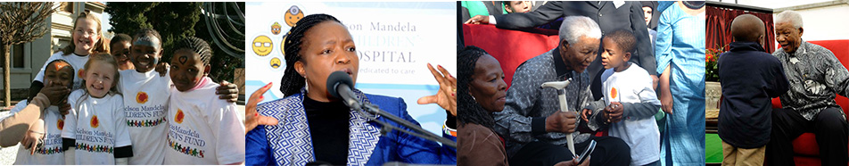

The loss of Sibongile Mkhabela’s son spurred her on in the almost impossible dream of creating the Nelson Mandela Children’s Hospital in South Africa.
Ten years ago, Nelson Mandela enriched his living legacy by unfolding his dream of the Nelson Mandela Children’s Hospital, a crucially needed institution for the millions of underserved children in South Africa. Sibongile Mkhabela, then CEO of the Nelson Mandela’s Children Fund, was chosen by Mandela to play a key role in this vision as he appointed her CEO of the Nelson Mandela Children's Hospital Trust.
Sibongile has a deeply personal interest in raising a new Children’s Hospital in Johannesburg. When her son Lindokuhle was five years old, she brought him to the hospital with third degree burns covering 80% of his body. Lindo was placed in a small isolation ICU, where he remained for the last 30 days of his life. The unit was so crowded with hospital machinery that Sibongile could not easily reach her son to soothe him, and she repeatedly asked the nurses to talk to him and restart the recordings of her voice or music that she always left playing, but they would not listen to her requests. Sibongile realized “that nursing a child needs a particular character and specific training” as she “watched the frustrations of the pediatric surgeons as they worried about their patient’s specific needs and complained about the absence of pediatric nursing care.” She concluded, “By the time I finally closed Lindo’s eyes, I knew how badly we were failing our children”.
Mandela supported Sibongile and her family throughout their ordeal, and witnessed the shortcomings and additional hardships placed on children and their caregivers when their only option is to receive care in an adult hospital ward. And so, Sibongile Mkhabela "left the hospital without her son, but walked away with a shared vision by Mr Mandela to improve the country's healthcare for children."
“We suddenly saw the world of sick children and it was not kind, thoughtful or childlike - it needed change.”
The entire continent of Africa is home to 450-million children, yet these children are served by only four dedicated children's hospitals: two in Cairo, Egypt, one in Nairobi, Kenya, and one in Cape Town, South Africa. In the state of California alone, there are 14 pediatric hospitals. As a result of this shortage, many South African children are left to wander ignored in their attempt to heal or survive - and if these children do receive healthcare, they are thrown into comprehensive facilities that lack staff, medicine, equipment and critical pediatric expertise.
About her work with Mandela, Sibongile said, "Nelson Mandela has been a symbol of hope in my life. I consider it an honor to be a part of this event to further his legacy and bring aid to children in need." The vision shared by Mandela and Sibongile is to create a hospital that would offer dedicated, advanced pediatric care for children, irrespective of their social or economic status.
Nelson Mandela's last birthday saw the launch of a global campaign, organized by the Legacy of Hope Foundation, for the Nelson Mandela Children's Hospital. The Legacy of Hope Foundation said in a statement that the campaign would include educational initiatives and calls-to-action encouraging the world to learn about Mandela and support his dream to build a children's hospital in South Africa. The successful realization of this vision is to become a template for building Children's Hospitals around the world, serving children of all backgrounds and means.
Click here for more information about The Legacy of Hope Foundation.
Signup to receive news and updates about upcoming events.